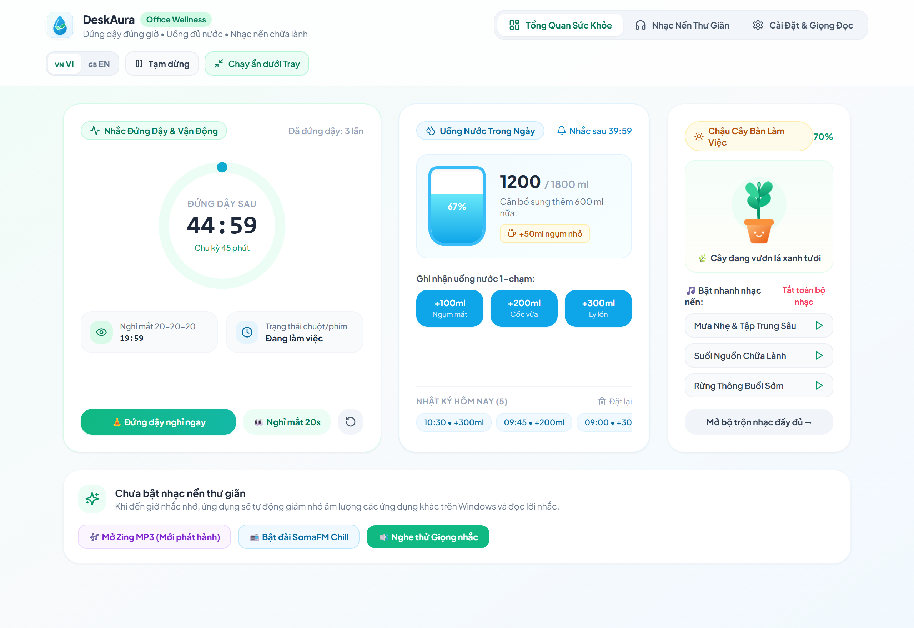
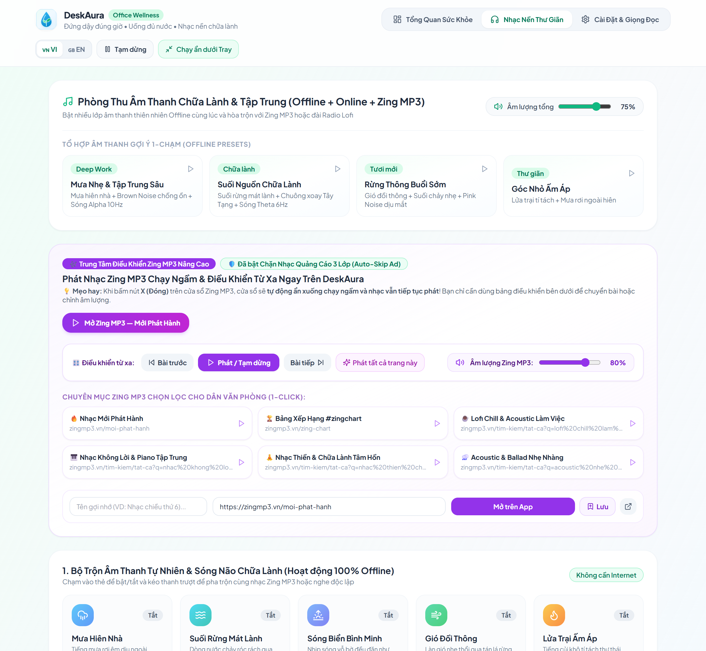

🎯
Bước 1
Đặt Nhịp Độ Riêng
Chọn mục tiêu nước uống và chu kỳ nghỉ mắt phù hợp với lịch làm việc của bạn.
Nhắc nghỉ mắt 20-20-20, hướng dẫn giãn cơ tại ghế, uống nước nuôi cây và đồng bộ tự động trên mọi thiết bị của bạn.
Chỉ 3 bước đơn giản để bảo vệ đôi mắt, cột sống và duy trì thói quen uống nước mỗi ngày.
Chọn mục tiêu nước uống và chu kỳ nghỉ mắt phù hợp với lịch làm việc của bạn.
Lời nhắc dịu dàng tự động nhỏ nhạc nền và tự lùi lịch khi bạn đang họp.
Ghi nhận ly nước chỉ bằng 1 cú nhấp chuột và ngắm chậu cây nở hoa mỗi ngày.
Kết nối xuyên suốt giữa PC Văn phòng, MacBook ở nhà, iPad và iPhone. Tiến độ của bạn tự động đồng bộ ở mọi nơi, để bạn chăm sóc sức khỏe bất cứ lúc nào.


Kết hợp khoa học nhãn khoa, vận động tại chỗ và âm thanh chữa lành trong một ứng dụng duy nhất.
Sau mỗi 20 phút làm việc, nhắc bạn phóng tầm mắt xa 6 mét trong 20 giây để mắt luôn ẩm mượt.
Hình vẽ chuyển động dẫn nhịp từng bước giúp bạn thả lỏng cổ, bả vai và cổ tay ngay tại chỗ ngồi.
Mỗi ngụm nước bạn uống giúp chậu cây nhỏ trên màn hình lớn dần từ hạt mầm đến đơm hoa.
Hoà âm tiếng mưa rơi, suối rừng, sóng não cùng kho nhạc Lofi & Zing MP3 không quảng cáo.
Từng tinh chỉnh tinh tế giúp việc chăm sóc bản thân diễn ra tự nhiên mà không cần cố gắng.